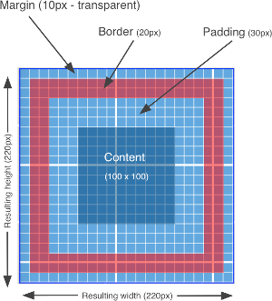

Overview
The CSS box model represents the space occupied by an element and consists of four areas: margin, border, padding, and content. The image below shows a block element with a 10px margin, 20px border, 30px padding and 100px content region.
Although most HTML elements have these properties, it's important to note that setting one doesn't always mean that it will render in the way shown above. For example, a margin edge can be collapsed, overlapped or transferred to another element. Many examples in this lab will show that setting the top-edge of a margin will sometimes cause it to be transferred to the top-edge of an ancestor.
This is a common theme in CSS. Setting a value will sometimes have only a partial effect or affect a different element altogether or have no affect at all (e.g., setting the opacity to 1 can have no affect but setting it to 0.7 will, but only partially).
Shared CSS
This section contains CSS that's shared by all experiments on this page. These common classes use the default static position, which can't be inherited, so they will remain static unless explicitly set. Also, there is no margin or padding used, except for extension classes (e.g., the "with-margin" class). These styles will often be applied to three nested divs: outermost, which contains middleGrid, which in turn contains innermost.
Basic Margin and Position
This section consists of basic experiments where setting the margin on an element affects only that element and not a different element (or both).
Absolute in Static
Innermost is given a 20px margin. Since it's an absolute-positioned div inside a static one, the results are as expected: There's a 20px margin all around, with no side-effects.
MiddleGrid was not given a margin, since it's a static div nested inside a static div. Adding a margin would trigger the Top Margin Transfer effect.
Static in Absolute
Innermost is given a 20px margin. Since it's a static-positioned div inside an absolute one, the results are as expected: There's a 20px margin all around, with no side-effects.
MiddleGrid has been given a 10px margin. Since it's an absolute div nested inside a static one, the results are also as expected: 10px margin all around, with no side-effects.
Absolute in Relative
Innermost is given a 20px margin. Since it's an absolute-positioned div inside a relative div, the results are the expected 20px margin all around, with no side-effects.
MiddleGrid was not given a margin. Since it's a relative div nested inside a static one, adding a margin would result in the Top Margin Transfer effect.
Relative in Absolute
Innermost is given a 20px margin. Since it's a relative-positioned div inside an absolute one, the results are as expected: 20px margin all around, with no side-effects.
MiddleGrid was given a 10px margin. Since it's an absolute div nested inside a static one, the results are also as expected: 10px margin all around, with no side-effects.
Absolute in Absolute
Innermost is given a 20px margin. Since it's an absolute-positioned div inside an absolute div, the results are the expected 20px margin all around, with no side-effects.
MiddleGrid was given a 10px margin. Since it's an absolute div nested inside a static one, the results are also as expected: 10px margin all around, with no side-effects.
Margin Caveats
The margin of a block-level element can collapse, overlap or be transferred to another element, depending on a variety of circumstances. This section experiments with some of these effects.
Top Margin Transfer (TMT)
When a static or relative-positioned block-level element is nested inside of a static or relative-positioned parent, its top margin will be transferred up the hierarchy until a suitable ancestor is found. This is true for blocks of static elements nested in static elements, relative nested in static, static nested in relative and relative nested in relative.
For example, the experiment below uses a relatively positioned innermost div with a 20px margin, nested inside of two statically positioned ancestor divs. As expected, this pushes the innermost div 20px to the right, relative to its parent, middle div.
Surprisingly, the top margin has no effect on the innermost div's distance from the top of middle div. Instead, the top margin bypasses both the innermost and the middle divs and is directly transferred to the top of the outermost div, pushing it down by 20px (as evidenced by the more than 20px gap above outermost).
TMT Padding Workarounds
TMT Border Workarounds
Border
TODO
Vertical Centering
Multiple Inner Boxes
This series of experiments shows how multiple inner boxes behave in the box model.